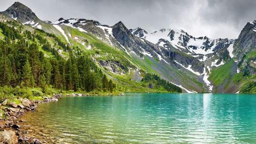

Image Gallery
The .card class can be used to display an image gallery. Click on the images to see it in full size:
The .rounded class adds rounded corners to an image
The rounded-circle class shapes the image to a circle
The .img-thumbnail class creates a thumbnail of the image:
The .img-fluid class makes the image scale nicely to the parent element (resize the browser window to see the effect):
The .card class can be used to display an image gallery. Click on the images to see it in full size: